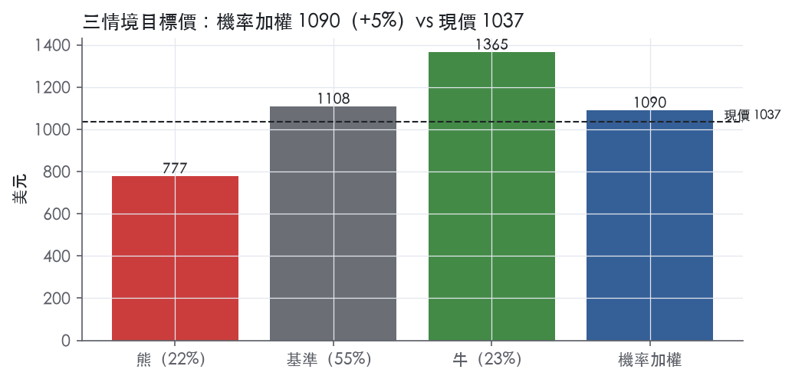
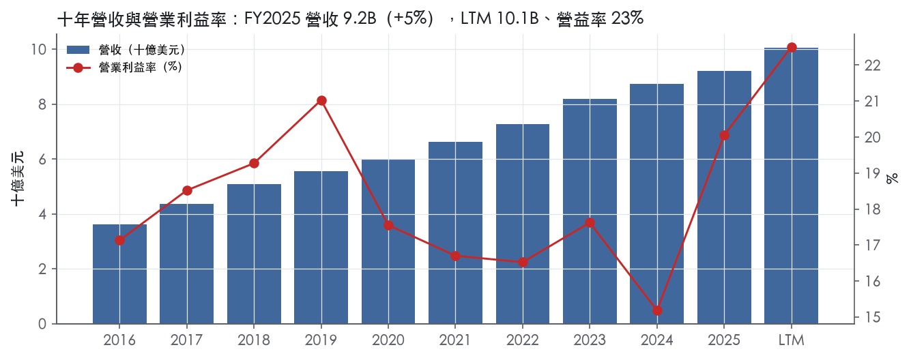
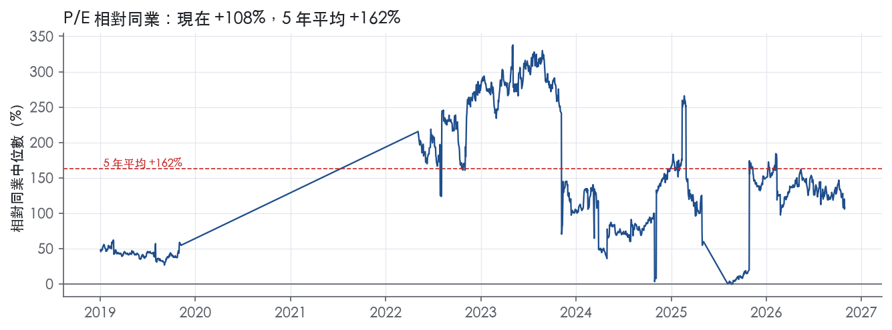
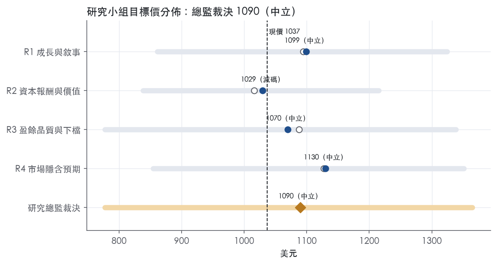

評等總表 › 不動產 › EQIX
盈餘上修撐住現價，利息折讓倍數，中性｜評等 中立｜目標價 1090
| 報告日 | 評等 | 目標價 | 當時股價 | 超額報酬 |
|---|---|---|---|---|
| 2026-10-29 | 中立 | 1,090 | 1,037 | -3.0% |
| 2026-10-12 | 中立 | 1,073 | 1,033 | -4.2% |
| 快評 | 動作 | 結論 |
|---|---|---|
| 2026-10-28 | 維持 | 獲利高於預測、營收略低，維持中立 |
| 評等 | 中立（邊界，鄰近減碼） |
| 12 個月目標價 | 1090 美元 |
| 現價 | 1036.67 美元（2026-10-29） |
| 預期報酬 | 股價 +5.1%＋股息 1.9%＝總報酬 +7.0%；同業籃門檻 10.0%，超額 -3.0% |
| 估值方法 | P/FFO 25.0x，套在第 5–8 季的FFO（也就是一年後的未來四季） |
| 三情境 | 熊 777／基準 1108／牛 1365 |
| 研究流程 | 四位研究員兩輪辯論＋研究總監裁決 |
| 資料來源 | SEC EDGAR XBRL、Tiingo、FRED（全免費） |
盈餘上修撐住現價，利息折讓倍數，中性（研究總監裁決，四位研究員兩輪辯論後）
評等 中立（邊界，鄰近減碼）｜12 個月目標價 1090 美元（總監三情境機率加權 1095 與研究員中位數 1085 各半）｜現價 1036.67（2026-10-29）
預期報酬：股價 +5.1%＋股息 1.9%＝總報酬 +7.0%。同業籃門檻 10.0%，超額 -3.0%，離減碼的分界不到三個百分點，屬邊界評等（落在其他級距的機率約三成）。
估值方法：P/FFO 25.0x，套在第 5–8 季的FFO（也就是一年後的未來四季）。三情境：熊 777（22%）／基準 1108（55%）／牛 1365（23%）。
什麼會讓研究總監改變看法：FY2027 指引中點低於 10% 或 Q4 新簽約跌破 424M，基準成長改走熊路徑並上調熊機率；FY2026 利息費用高於 600M 則倍數降至 23.5x。反之 FY2027 指引中點 ≥12% 且 AFFO 每股成長高於營收成長，倍數回到市場持平 25.7x、牛機率上調。
| 過去四季（實際，FY2026Q3） | 未來四季 | 第 5–8 季 | 第 9–12 季 | |
|---|---|---|---|---|
| 營收（B） | 10.1B | 11.2B | 12.3B | 13.3B |
| 營收成長 | 11.1% | 11.0% | 10.0% | 8.0% |
| 營業利益率 | 22.5% | 22.0% | 22.5% | 22.5% |
| 每股 FFO（美元） | 39.37 | 39.96 | 44.33 | 47.58 |
| FFO 成長 | 25.1% | 1.5% | 11.0% | 7.3% |
| 每股股息（美元） | 20.17 | 20.17 | 20.17 | 20.17 |
| EPS（美元） | 16.66 | 15.97 | 18.34 | 19.92 |
| P/FFO（現價） | 26.3x | 25.9x | 23.4x | 21.8x |
| 股息殖利率（現價） | 1.9% | 1.9% | 1.9% | 1.9% |
過去四季為申報數字；預測為研究總監的假設、程式計算。倍數與殖利率都用現價計算，用來看現價對應各期獲利的高低。
| 項目 | 上次（2026-10-13） | 這次（2026-10-30） | 變動 |
|---|---|---|---|
| 評等 | 中立 | 中立 | ＝ |
| 機率加權目標價（美元） | 1,073 | 1,090 | +1.5% |
| 超額報酬 | -4.2% | -3.0% | +1.2 pp |
| 目標倍數 | 24.5x | 25.0x | — |
| 未來四季營收成長 | 9.5% | 11.0% | +1.5 pp |
| 未來四季營益率 | 20.8% | 22.0% | +1.2 pp |
| 未來四季 EPS（美元） | 14.35 | 15.97 | +11.3% |
| 熊／基準／牛機率 | 21／54／25 | 22／55／23 | — |
程式計算；「未來四季」各自從當次報告的資料起點算。研究總監逐點說明見第八章「與上次報告比較」。
| 情境 | 機率（歷史） | 故事 | 未來四季營收成長 | 第 5–8 季營益率 | 倍數 | 目標價 | 股價漲跌 |
|---|---|---|---|---|---|---|---|
| 熊 | 22%（19%） | 對應風險表第 1 條（資本支出上修但需求未兌現、FCF 持續負）與第 4 條（建案延宕）：新簽約失速、約 6.3B 承諾資本支出照建、固定成本去槓桿、低價增發，倍數至前瞻帶 P10 附近 | 8.0% | 19.5% | 21.0x | 777 | -25.0% |
| 基準 | 55%（59%） | 已簽約產能讓 2027 年營收兌現 10%，營益率因折舊上升持平，利息與 1.5% 稀釋吃掉部分每股 FFO 成長，倍數略低於市場持平 | 11.0% | 22.5% | 25.0x | 1108 | 6.9% |
| 牛 | 23%（22%） | FY2027 指引落 10–13% 上緣、AFFO 每股成長高於營收、增量報酬證成，總經走本行上行路徑（10 年債 4.85），倍數至前瞻帶 P75 | 13.0% | 24.0% | 28.3x | 1365 | 31.7% |
目標價由程式依研究總監的驅動與倍數計算；機率由研究總監給定。括號內是歷史頻率：把這檔股票過去十年 12 個月報酬的波動形狀，置中在基準情境，結果落在各情境附近的比例。

四位研究員用不同方法各自估值，回應研究總監的質疑後交出第二輪，最後由總監逐點裁決。各研究員的主張見第七章，裁決理由見第八章，完整論證見《研究底稿》。
| 立場（一輪→二輪） | 加權目標價（一輪→二輪） | 評等（一輪→二輪） | 第二輪倍數 | 熊～牛目標價 | |
|---|---|---|---|---|---|
| R1 成長與敘事 | 中性→中性 | 1094→1099 | 中立→中立 | 27.0x | 861～1324 |
| R2 資本報酬與價值 | 看空→看空 | 1016→1029 | 減碼→減碼 | 26.0x | 838～1215 |
| R3 盈餘品質與下檔 | 中性→中性 | 1088→1070 | 中立→中立 | 25.0x | 777～1338 |
| R4 市場隱含預期 | 看多→中性 | 1127→1130 | 中立→中立 | 25.7x | 854～1351 |
| 研究總監裁決 | 中性 | 1090 | 中立 | 25.0x | 777～1365 |
目標價由程式依各自的驅動與倍數計算；評等＝機率加權總報酬 − 同業籃門檻。
Equinix 是全球最大的多租戶數據中心（MTDC）與互連基礎設施業者，以 REIT 形式運營，提供機房空間、電力與全球互連生態系統給電信商、雲端服務商、金融服務業與企業客戶。公司自我定位為「the world's digital infrastructure company」，透過全球佈局的 IBX 與 xScale 數據中心、基礎設施與互連產品，以及數位生態系統服務大量多元的全球客戶¹。公司成立於 1998 年，自創立起即以網路中立、多租戶模式運營，讓競爭中的網路可以互連共享流量¹。截至 2025 年底，全球版圖涵蓋 280 個數據中心、77 個市場、36 個國家，客戶數超過 10,500 家，其中包含 2,000 多家網路服務商¹。FY2025 營收 9.22B 美元，LTM 營收已達 10.06B，是一家規模持續擴張、受 AI 與雲端需求驅動的基礎設施收租型公司。
公司依地理區劃分三個可報告分部：Americas、EMEA、Asia-Pacific，10-K 未揭露各分部占營收具體比重¹。產品面分為兩大類：基礎設施產品（Private Cages、Secure Cabinets、Secure Cabinet Express 等機房空間/電力租賃，依客戶消耗空間與電力計費，產生月經常性收入 MRR）與互連產品（Equinix Fabric、Fabric Cloud Router、Cross Connects、Internet Exchange、Internet Access、Fiber Connect、Metro Connect、Network Edge 等，依客戶對外連接數計費，同樣產生 MRR）¹。數據中心本身分兩型：IBX 是碳中立型機房，服務一般企業與服務商的互連需求；xScale 是透過合資夥伴開發運營，專門服務超大型雲端業者的核心工作負載擴張需求¹。公司亦提供 Smart View、Smart Hands、Smart Build、Managed Solutions 等加值服務，部分產生 MRR、部分產生一次性收入（NRR）¹。最新一季互連收入年增 10%（如實申報與正常化固定匯率口徑一致），其中 Fabric 收入年增 24%²。產品組合正從純機房租賃往高毛利的互連與 AI 相關服務（如新推出的 Fabric One、Inference Exchange）傾斜，這是公司近年毛利率、營益率持續改善（FY2025 毛利率 51.1%、營益率 20.0%，優於 FY2024 的 48.9%／15.2%）的主要結構性原因。
客戶高度分散且無集中度風險：截至 2025 年底客戶數超過 10,500 家，單一客戶占總營收比重未達 10%¹。客戶類型涵蓋電信商、行動與其他網路服務商、雲端與 IT 服務商、數位媒體與內容商、金融服務公司與全球企業生態系¹。公司以直接銷售團隊搭配通路行銷計畫服務客戶，銷售組織依客戶類型與地理區劃分，輔以全球客戶服務團隊¹。地理上公司按 Americas、EMEA、Asia-Pacific 三區組織分部與員工：截至 2025 年底員工 13,716 人，其中 Americas 5,917 人、EMEA 4,706 人、Asia-Pacific 3,093 人¹。10-K 未揭露各地區營收占比的具體數字。運營可靠度方面，公司在 2025 年全年維持 99.9999%+ 的運營正常率¹。
FY2025Q4 營收 2.42B 美元，年增 7.0%，但受費用項目影響營益率回落至 17.4%（is 期別：FY2025Q4）。FY2026Q1 營收 2.44B 美元、年增 9.8%，毛利率回升至 51.5%、營益率 23.6%，淨利 0.41B 美元、EPS 4.20（is 期別：FY2026Q1）。FY2026Q2 營收 2.625B 美元，年增 16%（如實申報與正常化固定匯率口徑一致），主因強勁基本面表現疊加一次性 xScale 費用³；營業利益 665M 美元，年增 35%，主要來自強勁基本面表現與一次性 xScale 費用的影響³；淨利 479M 美元，年增 30%，EPS 4.83 美元，年增 29%³；調整後 EBITDA 達 1.396B 美元，創紀錄的 53% 調整後 EBITDA 利潤率，較去年同期增 24%（如實申報）或 22%（正常化固定匯率）³；當季年化新簽約額（gross bookings）年增 23%，新增淨互連數 9,700 個創紀錄³。FY2026Q3 營收 2.571B 美元，較去年同期增 11%（如實申報）或 12%（正常化固定匯率），主要受強勁基本面表現驅動²；營業利益 600M 美元，年增 27%，主要來自強勁基本面運營表現²；淨利 489M 美元，年增 31%，主要來自較高營業利益與 atNorth 合資案的一次性費用收入²；EPS 4.93 美元，年增 29%²；調整後 EBITDA 達 1.321B 美元，如實申報年增 15%，正常化固定匯率年增 14%²；年化新簽約額達創紀錄的 533M 美元，年增 35%²。公司連續第四個季度實現雙位數月經常性收入年增長，反映公司在服務傳統與 AI 工作負載中的核心地位²。對於第四季，公司預期營收介於 2.684B 至 2.724B 美元之間，較去年同期增長 11-13%（如實申報），或 12-13%（正常化固定匯率）；調整後 EBITDA 預期介於 1.328B 至 1.368B 美元，對應調整後 EBITDA 利潤率 49-50%²。公司已連續第三個季度上修 2026 全年指引，將全年營收指引上修至 10.325B–10.365B 美元（約 12% 增長），調整後 EBITDA 指引上修至 5.290B–5.330B 美元（約 51% 利潤率）²。
公司表示 AI、數據密集工作負載與生態系導向商業模式正在重塑產業運作方式，組織正從孤立式數位採用轉向跨夥伴與平台互通的互連系統，而公司憑藉規模化全球佈局、混合架構需求、互連必要性，以及 AI 作為生態系加速器四大趨勢，占據獨特有利位置¹。公司特別強調 AI 正在推升對分散式、互連數位基礎設施的需求，訓練、推論與模型協調都需要跨雲端與邊緣環境的高密度資料交換，公司已經為企業的 AI 需求打造出涵蓋模型供應商、資料平台、neocloud 與 gateway 的領先 AI 生態系¹。公司管理層在最新法說中表示，Q3 業績與上修後的全年指引反映出公司差異化定位與日益提升的重要性，公司在互連與月經常性收入等驅動長期價值創造的關鍵指標上實現雙位數成長，並加速產能擴充以滿足廣泛需求，同時推出 Fabric One 與 Inference Exchange 以協助企業客戶運行、連接並協調其最關鍵的工作負載²。公司在 2026 年 7 月同步上修 2027-2029 長期展望，將年營收成長目標區間由 7-10% 上修至 10-13%，2029 年調整後 EBITDA 利潤率目標由 52%+ 上修至 53%+，年度資本支出區間由 3,000-4,000M 美元大幅上修至 5,000-7,000M 美元，反映更強勁的需求、加速的新簽約與預售活動、來自承諾產能的更高可見度、堅挺的定價，以及對投入資本回報率的持續信心³。整體來看，公司的成長敘事已從傳統機房租賃轉向「AI 基礎設施＋互連生態系」雙引擎，資本支出大幅上修意味著公司押注 AI 相關容量需求將持續數年，這是觀察後續毛利率與自由現金流壓力的關�键變數。公司近兩個季度持續調高資本支出指引且 FCF 轉為負值（FY2026Q2 FCF -0.51B、FY2026Q3 FCF -0.32B），顯示擴產周期正處於高峰，投資人需關注產能是否能如期轉化為營收與利潤率兌現。

Equinix 的互連生態系有真實的網路效應，但十年資本報酬沒有越過資本成本，所以評級為窄，而且落在窄的下緣，不給寬。質化上它具備寬護城河的特徵，數字上只有 FY2025 一年 ROIC 高於資本成本，這一年的數字還有資料品質疑慮。我們有把握的是互連收入與既有機櫃的定價權未來 5 年以上不會瓦解；新一輪擴產期間 ROIC 能否守在資本成本之上，是這個窄評級的唯一前提。趨勢判為穩定：利潤率改善與 ROIC 上升是正面訊號，但被大幅上修的資本支出抵銷，不足以判定變寬。
主要來源是網路效應，次要來源是轉換成本；無形資產、成本優勢、效率規模證據不足，不列入。
網路效應。 公司在 10-K 寫明，客戶越多，其供應商與業務夥伴越有誘因進駐同一機房直接互連，「This adjacency creates a network effect that attracts new customers」¹。生態系包含超過 10,500 家客戶，其中 2,000+ 家網路服務商，並握有領先的 cloud on-ramp 市占¹。累積互連數超過 500,000 條¹。互連產品依客戶的對外連接數計費並產生 MRR，網路效應因此直接轉成營收，不只是行銷說法。最新一季 Fabric 收入年增 24%²。這個效應以單一都會區的機房群為單位；280 個數據中心、77 個市場、36 個國家的版圖，把它複製到多個都會節點¹。
轉換成本。 Private Cages 依單一客戶訂製建置，配有分界機架、配線架、梯架與光纖槽等配線系統¹。Cross Connects 是同一機房內兩個 Equinix 客戶之間的點對點實體線路¹。客戶搬離時必須切斷並重建與夥伴的實體互連，夥伴若不跟著搬，延遲與成本都會變差，所以互連密度越高的客戶越難離開。基礎設施產品採固定期限合約並產生 MRR¹。公司 2025 年全年營運正常率達 99.9999%+¹。可靠度沒有給客戶轉換的理由。
未列入的類別。 10-K 提到公司擁有商標、專利、API 與客戶入口網站等智慧財產¹。這些資產擋不住競爭者，不構成無形資產護城河。PUE 1.39 缺乏同業對照，不足以證明成本優勢。
利潤率穩定度支持護城河存在，資本報酬不支持寬護城河；兩者衝突，是本章下修評級的原因。
毛利率十年平均 49.1%、標準差 0.9%、區間 47.7% 至 51.1%。營業利益率十年平均 18.0%、標準差 1.7%。營收成長在 20.9% 到 5.4% 之間起伏，利潤率卻幾乎不動，這符合有定價權的收租型資產。
衝突在資本報酬。ROIC 十年平均 6.6%，資本成本代理值 10.1%，平均落差 -3.5%，有資料的 9 年中只有 1 年高於資本成本。FY2017 至 FY2022 的 ROIC 都在 4.1% 至 5.8% 之間（–FY2022），之後升到 7.2%、9.3%、13.4%。
這段上升有資料疑點。淨負債從 FY2022 的 10.97B 跳到 FY2023 的 -0.43B，FY2026 前三季總債務只有 0.01B。10-K 同時寫明公司累計發行約 $9.5 billion 綠色債券¹。這兩組數字不可能同時成立；若投入資本漏計這批債務，FY2023 以後的 ROIC 被高估，唯一高於資本成本的 FY2025 可能只是資料造成的假象。
我們仍維持窄、不降為無，理由有三。第一，利潤率的穩定度與互連的計費結構顯示定價權確實存在。第二，資本成本代理值用現在的 10 年債殖利率 5.05%套到全部歷史年度，對 2021 年以前的低利率期間偏嚴。第三，REIT 的重折舊會壓低 GAAP 報酬率。不過，如果資料修正後 FY2025 的 ROIC 仍低於資本成本，評級應直接改為無。
最大的侵蝕來源是公司自己的資本配置，其次才是外部競爭。
擴產稀釋報酬。 公司把年度資本支出區間由 3,000-4,000M 美元上修到 5,000-7,000M 美元³。FY2025 資本支出占營收 46.8%，LTM FCF 為 -1.66B。新增產能若偏向互連密度低的 AI 與 hyperscale 機房，網路效應帶來的超額報酬會被稀釋。
超大型雲端業者自建。 10-K 承認許多企業與服務商，包括 hyperscale cloud service providers，擁有自己的數據中心¹。xScale 以合資方式服務 hyperscaler，這塊業務主要比的是價格與交付速度，網路效應很弱。
市場分散。 10-K 形容全球 MTDC 市場「large and remains highly fragmented」，競爭者涵蓋電信商、中立機房、公私有雲與系統整合商¹。
利率。 10 年債 5.05%墊高了資本成本門檻，ROIC 要越過的標準比過去更高。
目標倍數相對同業應持平，不給溢價：網路效應撐住利潤率穩定，但十年 ROIC 沒有越過資本成本，倍數溢價缺乏報酬面支撐。溢價只能當上檔情境，前提是資料修正後 ROIC 仍高於 10.1%，而且 5,000-7,000M 美元的擴產沒有稀釋報酬。目前 EV/EBITDA 22.4x 低於自身五年中位數 25.3x，我們不建議以回到歷史中位數作為目標，因為那段期間的倍數沒有被資本報酬證成。
| 指標 | 最新 | 十年平均 | 標準差 | 最低 | 最高 |
|---|---|---|---|---|---|
| ROIC | 13.4% | 6.6% | 2.8% | 4.1% | 13.4% |
| 毛利率 | 51.1% | 49.1% | 0.9% | 47.7% | 51.1% |
| 營業利益率 | 20.0% | 18.0% | 1.7% | 15.2% | 21.0% |
| FCF 利潤率 | -4.3% | 0.2% | 4.4% | -5.5% | 9.4% |
| ROE | 9.8% | 6.1% | 1.8% | 3.8% | 9.8% |
程式計算。資本成本代理值（10 年債＋5%）：10.1%；ROIC 平均減資本成本：-3.5%；ROIC 有資料的 9 年中，高於資本成本 1 年。
Equinix 的 GAAP 盈餘有現金支撐：LTM 營業現金流／淨利 2.53x、近三年平均 3.40x、十年平均 4.89x，全部是綠燈。真正的紅燈只有一項——自由現金流／淨利 LTM -1.01x（量化底稘），但這是資本支出／營收從歷史 30–40% 跳升到 FY2025 的 46.8%（資料包年度表）所致，屬於資料中心擴建周期的真實投資，不是盈餘品質問題。REIT 的資本配置邏輯本來就是「借錨、擴產能、用 AFFO 衡量配息能力」，這也是為什麼公司自己用 AFFO 而非自由現金流來管理股利。
跟上，而且跟得很緊。FY2025 淨利 1,348M（歸屬普通股股東淨利 1,350M）⁴，同年營業現金流 3,911M⁴，CFO 遠高於淨利，應計比率 LTM -5.9%、近三年 -7.0%、十年 -7.3%全部是負值且燈號綠，代表盈餘不是靠應計堆出來的，現金流甚至比帳列淨利更保守。應收帳款成長與營收成長的差 FY2025 僅 +0.1pp，綠燈，營運資金沒有在吃盈餘。問題出在投資活動：FY2025 投資活動淨流出 6,484M，較 2024 年增加 2,547M，主因資本支出增加 1.2B、不動產收購增加 657M、業務收購（含 TIM 收購）增加 251M⁴，把營業現金流吃到只剩負的自由現金流（資料包：FY2025 FCF -0.40B）。這是「花錢蓋機房」造成的現金流出，不是「收不到錢」造成的盈餘注水。
公司把 Adjusted EBITDA 定義為淨利剔除所得稅、利息收支、債務清償損益、折舊攤銷攤銷、股權薨勞費用、重組費用、減損費用、交易成本與資產出售損益⁴。FY2025 的橋接金額：所得稅費用 160M、利息收入 -193M、利息費用 527M、折舊攤銷攤銷費用 2,066M、股權酬勞費用 498M、重組及退出費用 33M、減損費用 68M、交易成本 18M，淨利 1,348M 加總後得 Adjusted EBITDA 4,530M⁴。其中折舊攤銷是真實歷史投資的分攤，加回合理；但股權酬勞 498M 是真實且持續的員工成本，公司加回但我們不加回，這也是計分表 SBC／營收 LTM 5.4%、黃燈的原因。FFO／AFFO 的調整更進一步，FY2025 FFO 2,668M、AFFO 3,761M，AFFO 比 FFO 多加回股權酬勞 498M、非不動產折舊 568M、攤銷 200M、經常性資本支出則扣除 284M⁴——這是 REIT 業界標準算法，用來衡量配息能力，但不是現金實際留存的全貌。最新一季（FY2026Q3）的 8-K 更值得注意：淨利 489M 年增 31%，新聞稿自己寫「主要來自營業利益提高及 atNorth 合資案的一次性費用收入」²；AFFO 1.156B 年增 20%，排除 atNorth 合資利益後僅年增 14%²。這代表本季 GAAP 淨利與非 GAAP AFFO 都被一次性項目墊高，估值時應該扣掉這塊。
槓桿表面上很乾淨，淨負債／EBITDA LTM -0.81x、近三年平均 -0.33x，綠燈，年度表上 FY2023–FY2025 淨負債皆為負值（-0.43B、-1.76B、-1.24B，資料包年度表）。但這得益於這幾年持續用 ATM 發行普通股籌資，FY2025 透過 2024 年 ATM 計畫出售股份淨得約 99M⁴，加上 2025 年全年發行 4.3B 優先票據⁴，淨負債為負不代表公司不借錢，而是帳上現金與短期投資（3.2B，加上 4.0B 循環信用額度）撐住流動性⁴。利息保障倍數 LTM 3.75x、十年平均僅 2.68x，黃燈，原因是公司在高資本支出周期持續發債，FY2025 利息費用年增 70M（+15%）主因 2024、2025 年發行優先票據⁴；同時資本化利息從 36M 增加到 79M⁴，代表部分利息成本被遞延計入在建工程而非當期費用化，實際現金利息負擔比利益表上看到的更重。股東回饋方面（股利＋回購）／淨利 LTM 121.8%、近三年 160.3%、十年 213.7%，綠燈，但比率超過 100% 且公司同時在發股發債，這是「用籌資支應股利」的典型 REIT 模式，不是用自由現金流發股利。稀釋股數年變動 LTM 0.1%、近三年 2.2%、十年 3.7%，黃燈，FY2025 仍透過 ATM 增發約 107,493 股⁴，長期有稀釋壓力，但近一年已明顯收斂。
程式標出的唯一紅旗——自由現金流／淨利 LTM -1.01x——是真實現象但可以解釋：FY2025 資本支出／營收達 46.8%（資料包年度表），較歷史均值高出一截，對應公司 2025 年開出 16 個新資料中心、52 個主要開發項目、未來承諾資本支出約 6.3B⁴，這是擴產能的真實支出，不是盈餘灌水，判定為「可解釋、非一次性，但會持續壓低自由現金流直到資本周期放緩」。SBC／營收黃燈（LTM 5.4%，高於十年均值 4.8%）：FY2025 美洲與 EMEA 的管銷費用增加主因均提到「包含股權酬勞的薪酬成本提高」⁴，這是真實、持續上升的成本，計分表不加回是正確處理，判定為「真問題，但幅度尚未達紅燈門檻」。利息保障黃燈：如上所述，資本化利息遞延與持續發債是結構性現象，只要資本支出周期不收斂，利息保障很難快速改善，判定為「真實但在可控範圍，槓桿本身淨負債為負值可緩衝」。稀釋股數黃燈：來自 ATM 增發用於籌資擴產，不是無償稀釋股東換取管理層酬勞，判定為「可解釋、與成長資本需求綁定」。
估值應該以 GAAP 淨利與 CFO 為盈餘品質的基準，AFFO／Adjusted EBITDA 可作為配息能力與營運規模的輔助指標，但 FY2026Q3 的 atNorth 一次性費用必須從 GAAP 淨利與 AFFO 兩邊都扣除再做年化外推。自由現金流為負不應直接套用傳統 FCF 殖利率估值，應改用 AFFO 或 CFO 減經常性資本支出（FY2025 為 284M，遠低於總資本支出）來看現金留存能力。槓桿目前不構成限制倍數的理由（淨負債／EBITDA 為負值），但利息保障黃燈與持續的發債規模（優先票據本金約 18.4B）意味著若資本支出周期不收斂，未來三年的利息費用成長速度值得在敏感性分析中單獨測試，不建議在基準情境給予額外估值溢價。
| 項目 | LTM | 近三年 | 十年 | 燈號 | 規則 |
|---|---|---|---|---|---|
| 營業現金流／淨利 | 2.53x | 3.40x | 4.89x | 綠 | ≥1.00x 綠、<0.80x 紅 |
| 自由現金流／淨利 | -1.01x | 0.13x | -0.04x | 紅 | ≥0.90x 綠、<0.60x 紅 |
| 應計比率（(淨利−CFO)／平均總資產） | -5.9% | -7.0% | -7.3% | 綠 | ≤0.0% 綠、>5.0% 紅 |
| SBC／營收 | 5.4% | 5.2% | 4.8% | 黃 | ≤3.0% 綠、>8.0% 紅 |
| 淨負債／EBITDA | -0.81x | -0.33x | 2.47x | 綠 | ≤1.50x 綠、>3.00x 紅 |
| 利息保障倍數（營業利益／利息） | 3.75x | 3.33x | 2.68x | 黃 | ≥8.00x 綠、<3.00x 紅 |
| 稀釋股數年變動 | 0.1% | 2.2% | 3.7% | 黃 | ≤0.0% 綠、>3.0% 紅 |
| （股利＋回購）／淨利 | 121.8% | 160.3% | 213.7% | 綠 | ≥50.0% 綠、<0.0% 紅 |
| 應收帳款成長 − 營收成長（FY2025） | +0.1pp | — | — | 綠 | ≤5pp 綠、>15pp 紅 |
程式計算；燈號以 LTM（無則近三年平均）判定。
| 風險 | 觸發指標（看什麼數字、在哪裡看） | 對 EPS 的影響方向與粗略幅度 | 未來 12 個月發生機率 | 出處 |
|---|---|---|---|---|
| 資本支出大幅上修但需求未兌現，FCF 持續惡化 | 每季 8-K 的 Non-recurring Capex 指引區間、FCF（ltm.fcf）、年化新簽約額（gross bookings） | 方向：負向；FY2026Q2 FCF -0.51B、FY2026Q3 FCF -0.32B，LTM FCF -1.66B；資本支出指引 5-6B美元（8-K），較先前長期展望 3-4B美元大幅上修 | 高 | ²³ |
| 電力取得與成本限制擴產速度與毛利率 | 各季毛利率變化、新IBX開業時程公告、電力相關資本支出說明 | 方向：負向，幅度中；電力成本上升直接侵蝕毛利率（FY2024毛利率48.9%→FY2025 51.1%波動） | 高 | 10-K 年報 FY2025 Item 1A（風險因素） |
| 利率上行推高再融資成本，侵蝕REIT估值與EPS | 10年期美債殖利率（ust10y）、公司下次債券發行利率、總負債/權益結構 | 方向：負向；總負債約21.4B美元，股東權益14.2B美元（10-K），現在10年期美債5.05%處於高位，再融資成本若升將直接加重利息費用 | 中 | 10-K 年報 FY2025 Item 1A（風險因素） |
| 建案延宕（許可、供應鏈、關稅）導致產能無法如期轉化為營收 | 公司揭露的「permitting delays in most metros」、鋼鐵關稅影響說明、每季新增機櫃交付數字 | 方向：負向，幅度中；公司自述「nearly 40% more cabinets planned for delivery in 2026」，若延宕將直接影響該指引兌現² | 中 | 10-K 年報 FY2025 Item 1A（風險因素） |
| 股價估值已處於歷史高分位，任何不及預期都會放大倍數修正 | trailing P/E、EV/EBITDA 相對5年分位數 | 方向：負向，幅度大；P/E 62.2x 僅處於5年分位0.2%（band.pe），EV/EBITDA 22.4x 處於16.7%分位，估值對預期落差極敏感【判，依量化底稿】 | 中 | 研究判斷 |
資本支出失控風險最致命，因為它直接決定FCF何時轉正。 公司在2026年7月將2027-2029年資本支出目標由3,000-4,000M美元大幅上修至5,000-7,000M美元，理由是「更強勁的需求、加速的新簽約與預售活動」³。但FCF已連續多季為負：FY2026Q1 -0.54B、Q2 -0.51B、Q3 -0.32B，LTM FCF為-1.66B美元。如果AI相關容量需求出現任何放緩——例如年化新簽約額（本季533M美元，年增35%²）增速回落——公司在高資本支出周期中會面臨更長的FCF轉正時間，進而壓縮分配能力與再融資空間。這是五條裡對EPS影響幅度最大且最快可被監測（每季8-K都會更新）的風險。
電力是公司自己反覆強調的實體瓶頸，且已是現在時態的問題。 10-K明確寫道「we are experiencing an increase in our costs to procure power」，且「the current demand for power may exceed the designed electrical capacity」於多數舊IBX機房⁵。AI工作負載的高密度用電需求進一步推升這個風險，公司也承認「chip shortages」可能延遲客戶部署⁵。這個風險的觀測指標很具體：每季毛利率變化（FY2025Q4一度降至50.5%、營益率17.4%，低於其他季度）即是電力/營運成本壓力的訊號。
利率風險透過兩條路徑打擊EPS：再融資成本與REIT估值的貼現率敏感度。 公司總負債21.4B美元、股東權益14.2B美元，顯示槓桿不低⁵。10-K明確點出「if prevailing interest rates…result in even higher interest rates upon refinancing…the interest expense relating to that refinanced indebtedness would increase」⁵。目前10年期美債殖利率5.05%處於近年高位，任何進一步上行都會直接推高公司未來債務展期成本，同時REIT類股對利率上升的估值彈性本身就偏高。
建案延宕風險直接牽動公司自己給出的產能交付指引。 公司在10-K中承認「we are currently experiencing permitting delays in most metros」⁵，同時也提到鋼鐵關稅可能是最大潛在成本衝擊來源⁵。但公司在最新新聞稿中又強調「nearly 40% more cabinets planned for delivery in 2026 than initially anticipated」²——這兩句話放在一起看，代表公司正同時面對延宕壓力與加速交付的雙重敘事，任何一季交付數字不如預期都會是明確訊號。
估值分位數本身就是風險，而非基本面之外的附加項。 公司目前P/E 62.2x，在過去5年的歷史分位僅0.2%（即幾乎是5年最低分位），EV/EBITDA在16.7%分位，顯示市場過去一年給予EQIX的估值倍數已經系統性抬升超越歷史區間上緣（股價近一年報酬30%，對比52週高點1115.94非常接近）【判，依量化底稿】。這代表當前股價已經price-in了持續雙位數成長與利潤率擴張的樂觀劇本，任何一次指引不達標或毛利率不如預期，都可能觸發倍數壓縮疊加盈餘下修的雙重打擊。
客戶集中於AI/雲端大客戶的依賴度正在上升，但10-K未揭露具體集中度數字。業務概況章指出xScale機房「專門服務超大型雲端業者的核心工作負載擴張需求」，且公司正尋求更多合資案服務「targeted set of hyperscale customers」⁵。雖然10-K強調單一客戶占營收不到10%，但若將xScale/hyperscale客戶合併視為一個需求來源，其集中度可能遠高於單一法人客戶的分散度表述所暗示的風險水平，這是財報未單獨揭露、但值得追蹤的結構性風險。
AFFO與GAAP淨利的差距正在擴大，部分受一次性項目（如atNorth合資費用）推動，投資人需留意非經常性收益對「達標」指引的貢獻度。本季淨利年增31%中，公司自己說明「primarily from higher operating income and a non-recurring fee earned in connection with our investment in the atNorth joint venture」²，意味著如果未來季度缺乏類似一次性收益貢獻，淨利/EPS年增幅可能明顯放緩，這是財報指引之外、需要自行拆解的風險。
現價 1036.67 對應 trailing（過去四季）P/FFO 26.3x、EV/EBITDA 22.3x、股息殖利率 1.9%、P/E 62.2x。主要估值倍數 P/FFO 現在 26.4x，落在5 年區間第 32 百分位（P10／P50／P90 = 25.0x／27.4x／30.7x）。
把程式的機械基準預測放到現價下，市場付的前瞻倍數是：P/FFO（未來四季） 26.0x、P/E（未來四季） 64.1x、P/FFO（第 5–8 季） 24.2x、P/E（第 5–8 季） 58.9x。反推 DCF 顯示市價隱含未來五年營收年成長 150.0%（WACC 9.0%、終值成長 3.0%、FCF 利潤率 -16.9%，SBC 不加回）。
| 倍數 | 現在 | 5 年 P10 | 5 年 P50 | 5 年 P90 | 現在分位 | 全期 P50 |
|---|---|---|---|---|---|---|
| P/E | 62.2x | 70.2x | 84.3x | 127.1x | 0.2% | 97.9x |
| EV/EBITDA | 22.4x | 21.5x | 25.3x | 27.8x | 16.7% | 25.0x |
| EV/Sales | 9.9x | 8.4x | 10.2x | 11.3x | 31.3% | 10.3x |
| P/FFO | 26.4x | 25.0x | 27.4x | 30.7x | 31.7% | 27.5x |
trailing 倍數（股價 ÷ 過去四季）；分位以每個交易日計算。
同業籃：AMT, BSTT, BXP, COLD, AHR, APLE（SIC 6798 同業 37 家中，CY2025 營收最接近的 6 家）。評等門檻 10.0%：同業「倍數不變下持有一年」的隱含報酬中位數（＝ FCF 殖利率 ×(1＋g)＋g，g 為 5 年營收年複合成長並夾在 −2%～8%），每家夾在 0～15%、P/E 低於 5 倍視為資料可疑而排除，中位數再限制在 10 年債到 10 年債＋5% 之間；排除：BSTT（隱含報酬算不出來）、COLD（隱含報酬算不出來）。
| 代號 | 市值 | 5 年營收 CAGR | 營益率 | P/FFO | P/E | EV/EBITDA | 淨負債／EBITDA | 隱含報酬 |
|---|---|---|---|---|---|---|---|---|
| EQIX | 102.6B | 9.0% | 22.5% | 26.3x | 62.2x | 22.3x | -0.8x | 9.7% |
| AMT | 86.3B | 5.8% | 44.8% | 15.5x | 26.1x | 17.4x | 5.1x | 10.6% |
| BSTT | 0.5B | 25.6% | 58.1% | — | — | 6.8x | 6.8x | — |
| BXP | 10.1B | 4.7% | — | 8.7x | 33.8x | — | — | 7.8% |
| COLD | 4.2B | 5.5% | -12.5% | 12.7x | — | — | — | — |
| AHR | 10.3B | 16.2% | 19.2% | 27.0x | 77.3x | — | — | 9.4% |
| APLE | 4.4B | 18.6% | 17.9% | 12.0x | 25.6x | 13.1x | 3.3x | 15.1% |
| 同業中位數 | 11.0% | 19.2% | 12.7x | 30.0x | 13.1x | 5.1x | 10.0% |
全部 trailing，程式以各公司 SEC XBRL 與 Tiingo 行情計算；第一列為本檔。
P/E 相對同業中位數：現在 107.7%，過去 1 年平均 137.8%、3 年 112.1%、5 年 162.4%；EV/EBITDA 相對同業中位數：現在 132.8%，過去 1 年平均 134.5%、3 年 128.8%、5 年 —。

事後實現前瞻倍數帶（P/FFO，2018-11-19..2025-11-17）：P10／P50／P90 = 20.2x／25.3x／31.1x。它是每個交易日的股價除以之後四季實際實現的指標；一年後，今天的第 5–8 季正是那時的未來四季，所以這條帶是 12 個月目標價的同口徑倍數。因為用的是事後實際而非當時預期，過去成長超乎預期的公司這條帶會偏低。
程式的機械基準（成長率從過去四季年增率三年收斂到 6%、利潤率持平）用 事後實現前瞻 P/FFO P50 估值得到 1085（4.7%），市場現行前瞻倍數（現價 ÷ 基準 未來四季指標）一年後持平，套在基準 第 5–8 季指標得到 1102。這兩個數字只是參考點，不是本報告的目標價；研究員對這個定價的回應在第七章。
下表是每位研究員第一輪（各自獨立）與第二輪（回應研究總監的質疑後）的結果。目標價全由程式依各自的假設計算。
| 立場（一輪→二輪） | 加權目標價（一輪→二輪） | 評等（一輪→二輪） | 第二輪倍數 | 熊～牛目標價 | |
|---|---|---|---|---|---|
| R1 成長與敘事 | 中性→中性 | 1094→1099 | 中立→中立 | 27.0x | 861～1324 |
| R2 資本報酬與價值 | 看空→看空 | 1016→1029 | 減碼→減碼 | 26.0x | 838～1215 |
| R3 盈餘品質與下檔 | 中性→中性 | 1088→1070 | 中立→中立 | 25.0x | 777～1338 |
| R4 市場隱含預期 | 看多→中性 | 1127→1130 | 中立→中立 | 25.7x | 854～1351 |
| 研究總監裁決 | 中性 | 1090 | 中立 | 25.0x | 777～1365 |
目標價由程式依各自的驅動與倍數計算；評等＝機率加權總報酬 − 同業籃門檻。
分歧度：第一輪 加權目標價 1016～1127（區間＝現價的 11%）· 倍數 25～27.5x · 立場 中性×2、看空×1、看多×1；第二輪 加權目標價 1029～1130（區間＝現價的 10%）· 倍數 25～27x · 立場 中性×3、看空×1。

| 研究員 | 第二輪主張 | 堅持的理由 |
|---|---|---|
| R1 成長與敘事 | 中性，27.0 倍 P/FFO；長期展望上修到 10–13%，倍數高於現行。 | 熊情境是一條因果鏈：交付延後時，約 6.3B 承諾資本支出照建。 |
| R2 資本報酬與價值 | 中性偏空，26.0 倍 P/FFO；成長是真的，報酬還沒證成。 | 股利靠新債支付；增量報酬揭露前，倍數不回 5 年中位數。 |
| R3 盈餘品質與下檔 | 中性，25.0 倍 P/FFO；數字是真的，融資拖慢每股 FFO。 | 股數年增 2.0% 不讓步；股利加上負的 FCF，缺口要靠增發補。 |
| R4 市場隱含預期 | 中性，25.7 倍 P/FFO，等於市場持平；報酬全來自 FFO 上修。 | 市場隱含 2027 年成長 7.7%，已簽約產能撐得起 10.0%。 |
每位研究員的逐條回應與完整論證見《研究底稿》（EQIX_研究底稿_2026-10-30.docx）。
| 分歧點 | R1 | R2 | R3 | R4 | 什麼資料會分出勝負 |
|---|---|---|---|---|---|
| 目標倍數與口徑 | 27.0x ntm，trailing 5 年帶現行 26.4x 與 P50 27.4x 之間；長期展望上修 | 26.0x ntm，低於持平 26.4x；利息路徑＋ROIC 未證成 | 25.0x q5_q8，略低於事後實現帶 P50 25.3x；資本化利息、模型利息持平、真實債務 | 25.7x q5_q8＝市場持平；帶在成長期偏低 | FY2026 10-K 利息費用與資本化利息；FY2027 AFFO 每股指引對營收指引（2027-02） |
| 營業利益率 y1／y2／y3 | 22.5／23.0／23.5 | 22.0／22.5／22.5 | 21.5／22.0／22.5 | 23.0／23.0／23.0 | Q4'26 GAAP 營益率；FY2027 調整後 EBITDA 利潤率指引；10-K D&A／營收 |
| 營收成長 y1／y2／y3 | 11／10／8.5 | 11／10／9 | 10.5／10／9 | 11.5／10／8 | FY2027 營收指引中點（2027-02）；Q4'26 新簽約 |
| 稀釋（share_change） | 1.5% | 1.1%（基準） | 2.0% | 2.0% | FY2026 10-K ATM 淨得；FY2027Q2 稀釋股數年增 |
| 情境機率與熊深度 | 27／49／24，熊 23.0x | 29／40／31，熊 22.5x、無風險表 | 22／56／22，熊 21.0x | 26／50／24，熊 21.5x | 2027-02 法說揭露的機櫃交付時程與新簽約年增 |
1. 倍數：採 R3 的 25.0x，口徑 q5_q8。 四人的錨其實一致：trailing 5 年 P50 27.4x 套 NTM 與事後實現帶 P50 25.3x 套 Q5–Q8，基準目標價幾乎相同（基準模型 1093 對 1085），爭的是帶內位置。R4 要求「市場持平 25.7x、報酬全來自 FFO 上修」，但基準模型把利息按 LTM 持平，期末淨負債卻從 NTM 的 0.21B 升到 Q9–Q12 的 8.07B；真實優先票據本金約 18.4B⁴，資料包的 0.01B 總債務是錯的；資本化利息由 36M 增至 79M⁴，新產能完工後轉進損益。這些是公司因素：市場今天付的 25.7x 是對指引口徑付的，我們的 Q5–Q8 FFO 不扣利息就比指引樂觀，倍數就要扣回來。R1 的 27.0x 高於 NTM 口徑的市場隱含 26.0x，唯一理由是 7 月的長期展望上修，而股價近一年已漲 30%（快照）、對同業 P/E 溢價反而從 5 年均值 162.4% 收斂到 107.7%（同業比較表）——展望上修已經入價；他另以「帶內利率較低」為不到 P50 的理由屬利率重複計算，我不採（對他的結論無影響）。R2 的 26.0x 與 R3 同向，但把「ROIC 未證成」再扣一次；護城河章的處理是對同業不給溢價，不是再折價，何況相對溢價已收斂。折讓幅度：上次報告對 Q5–Q8 口徑扣約 1x（假設），其中含交付延宕的容忍；本季「2026 年交付機櫃比原計畫多近 40%」²拿掉這一塊，純利息部分約 0.7x（假設），落在 25.0x。
2. 營益率：採 R2 的 22.0／22.5／22.5。 LTM 22.5% 混合了 Q4'25 的 17.4%、含一次性 xScale 費用的 Q2'26 25.3%與 Q1、Q3 的 23.6%、23.3%。NTM 含一個季節性偏弱的 Q4（Q4 調整後 EBITDA 利潤率指引 49–50%，低於全年約 51%²）而不含一次性，y1 應略低於 LTM。R4 的 23.0% 只用 Q1、Q3 的高季；R1 的 23.0→23.5 爬升與 R4 都忽略了 R4 自己在 E4 承認的機制——資本支出／營收 57.9%持續，折舊占比上升會吃掉調整後 EBITDA 往 53%+ 的擴張。R3 的 21.5% 則低於「Q4 正常化後三季 23%+」能給的下限。預測紀錄支持這個選擇：R2 營業利益誤差中位數 +0.2% 最準，R1 +3.3%、R4 +2.1% 系統性偏高，我自己也偏高 +1.5%，應往下修。
3. 營收成長：own——y1 11.0%、y2 10.0%（R1、R2 的值），y3 8.0%（R4）。 y1 由 Q4 指引 11–13%、全年約 12%²撐住，但 Q2'27 要面對含一次性 xScale 費用的高基期（年增 16.4%），11% 比 R4 的 11.5% 穩；上季快評營收略低於我們的預測，也不支持再往上。y2 四人一致 10%：年化新簽約 533M、年增 35%²是已簽約需求，對應 2027 年計費。y3 超出合約能見度，十年表沒有連三年 ≥10%（都在兩年內回落），R4 用加速期後的回落年份 FY2019 9.7%、FY2020 7.8%定 8%，比 R2、R3 直接套 5 年 CAGR 9.0%（同業比較表）更貼近機制。
4. 稀釋：採 R1 的 1.5%。 2025 年擴產靠 4.3B 票據，ATM 淨得只約 99M⁴，LTM 稀釋 0.1%，R3、R4 的 2.0% 是把近三年均值 2.2% 直接外推，與最近一年的融資行為不符；R2 回到 1.1% 則忽略了 2027 年起資本支出區間升到 5,000–7,000M³、本行前提 Baa 利差由 1.44 擴到 1.75，債務的邊際成本上升，公司不會全用債。R1 已指出指引本身透露方向：AFFO 總額 4,340–4,380M 對 FY2025 的 3,761M，總額成長幅度高於每股的 14–15%²⁴，差距就是股數。1.5% 與倍數折讓不重複：股權融資走 share_change，債務融資走利息折讓。
5. 情境機率：own，牛 23／基準 55／熊 22。 R2 熊 31% 主導結果，但他沒看到風險表、熊是自訂機制，程式依他的距離算出的歷史頻率是 29／29 對稱；R3 自己承認「證據加深的是熊的深度不是機率」。公司特有證據全指向牛：連續三季上修、新簽約 +35%、定價轉強²，所以牛不低於熊。牛取 R4 情境、熊取 R3 情境，程式對照顯示 R4 牛區 28%、R3 牛區 21%、R3 熊區 21%、R4 熊區 23%，我的距離落在兩人之間。
漂移與總經偏離。 漂移表無人被程式標記：R1、R3、R4 的加權都是遠離中位數，R2 靠攏 17% 來自 V3（程式基準率）與 V4（10-K 融資數字）的證據修正，不退回，drift_rejections 為空。四人 macro_deviations 皆空，無需裁決；R2、R4 牛情境配本行上行路徑的 10 年債 4.85，是前提內的情境配對，不是偏離。本行前提對「2027 年有到期牆的高槓桿 REIT 偏空」，EQIX 到期結構未知、約 18.4B 票據對 102.62B 市值不算高槓桿，以利息折讓處理，不另扣。
與機械基準不同的驅動：
目標倍數 25.0x P/FFO，套 Q5–Q8（第 5–8 季）。錨：事後實現前瞻帶 P50 25.3x（成長期偏低）與市場持平 25.7x 之間，扣基準模型漏算的新增債務利息約 0.7x（假設）；利率不在帳上。相對同業：同業籃無數據中心 REIT，不加護城河溢價、不另扣；EV/EBITDA 溢價因 EV 低估不採用。
機率對歷史：置中分布 ≥+10% 為 24%、≥+20% 為 11%，≤−10% 為 30%、≤−20% 為 13%；我的牛熊距離與 R3、R4 相近，兩人程式對照的牛熊區頻率都在 21–28%，我給的 23／22 未偏離 10 個百分點。牛 ≥ 熊的順序來自本公司觸發事件（2026-10-28 第三次上修、新簽約 533M），不延續研究部的熊偏高慣例。
差在盈餘，不在倍數：市場對基準模型的 Q5–Q8 FFO 付 24.2x，隱含 y2 成長 7.7%；我們看 10%，差距來自已簽約的 2027 年計費產能。倍數上我們反而比市場持平 25.7x 低，因為模型漏算的利息要有人付。程式對 R3（同倍數、驅動略低）與 R4（市場持平倍數）算出 +4.1% 與 +10.7%，我們的假設落在兩者之間，機率加權後再被熊情境拉低，含 1.9% 股息跨不過同業籃 10.0% 門檻（AMT 10.6% 顯示換成基礎設施籃門檻不會更低），所以評等中立、立場中性，一致。
現價 1036.67 → 點估目標價 1108 → 機率加權目標價 1095 → 目標價 1090，差距拆成五段：成長順延 +65 美元（市場現行倍數 25.7x 一年後持平、獲利照機械基準）；倍數差 -29 美元（總監倍數 25.0x vs 市場持平倍數 25.7x，同一機械基準預測）；盈餘差 +36 美元（總監預測的第 5–8 季FFO 4.5B vs 機械基準 4.3B，同一倍數）；情境不對稱 -14 美元（機率加權減點估）；研究小組平均 -5 美元（總監機率加權 1095 與研究員第二輪中位數 1085 各半）。各段相加等於目標價減現價。本階段未接賣方共識，差距以市場隱含預期為對照。
| 驅動 | 機械基準 | 研究總監 | 差異 |
|---|---|---|---|
| 未來四季營收成長 | 9.4% | 11.0% | +1.6 pp |
| 第 5–8 季營收成長 | 7.7% | 10.0% | +2.3 pp |
| 第 9–12 季營收成長 | 6.0% | 8.0% | +2.0 pp |
| 未來四季營益率 | 22.5% | 22.0% | -0.5 pp |
| 第 5–8 季營益率 | 22.5% | 22.5% | ＝ |
| 第 9–12 季營益率 | 22.5% | 22.5% | ＝ |
| D&A／營收 | 21.6% | 21.6% | ＝ |
| 資本支出／營收 | 57.9% | 57.9% | ＝ |
| SBC／營收 | 5.4% | 5.4% | ＝ |
| 稅率 | 13.8% | 13.8% | ＝ |
| 股數年變動 | 1.1% | 1.5% | +0.4 pp |
研究總監只寫偏移，未寫的沿用基準。
| 期 | 營收 | 成長 | 營益率 | EBITDA | 淨利 | EPS | FFO | 每股 FFO | 每股股息 | 期末淨負債 |
|---|---|---|---|---|---|---|---|---|---|---|
| 未來四季 | 11.2B | 11.0% | 22.0% | 4.9B | 1.6B | 15.97 | 4.0B | 39.96 | 20.17 | 0.3B |
| 第 5–8 季 | 12.3B | 10.0% | 22.5% | 5.4B | 1.9B | 18.34 | 4.5B | 44.33 | 20.17 | 4.2B |
| 第 9–12 季 | 13.3B | 8.0% | 22.5% | 5.9B | 2.1B | 19.92 | 4.9B | 47.58 | 20.17 | 8.3B |
程式依上表的驅動計算；季度用最近四季季節性分攤；不含營運資金變動。
估值方法：P/FFO 25.0x，套在第 5–8 季的FFO（也就是一年後的未來四季）。研究總監目標倍數的錨：事後實現前瞻 P/FFO 帶 P50 25.3x 與市場持平 25.7x 之間，扣基準模型按 LTM 持平而漏算的新增債務利息約 0.7x（假設）；同業無數據中心 REIT，不加溢價不另扣。
計算：FFO（第 5–8 季） 4.5B × 25.0x＝權益價值 113.0B，除以第 5–8 季的股數 → 點估目標價 1108（6.9%）；隱含 P/E（未來四季）69.4x、P/E（第 5–8 季）60.4x、EV/EBITDA（第 5–8 季）20.9x、FCF 殖利率（第 5–8 季）-1.7%。
總監三情境機率加權目標價 1095，研究員第二輪中位數 1085，兩者各半＝目標價 1090；預期報酬 股價 +5.1%＋股息 1.9%＝總報酬 +7.0%；減評等門檻 10.0%（同業籃隱含報酬中位數（AMT, BSTT, BXP, COLD, AHR, APLE））＝超額報酬 -3.0% → 評等 中立（超額 >+15% 買進、+5～+15% 加碼、±5% 中立、−5～−15% 減碼、<−15% 賣出）。同一份資料重開研究小組，超額約有正負四個百分點的雜訊（一個標準差，二十檔實測）；以此估計，評等落在其他級距的機率約三成。超額離減碼的分界不到三個百分點，應視為邊界評等。
| 情境 | 機率 | 未來四季成長 | 第 5–8 季成長 | 第 5–8 季營益率 | FFO（第 5–8 季） | 倍數 | 目標價 |
|---|---|---|---|---|---|---|---|
| 熊 | 22% | 8.0% | 5.5% | 19.5% | 3.9B | 21.0x | 777 |
| 基準 | 55% | 11.0% | 10.0% | 22.5% | 4.5B | 25.0x | 1108 |
| 牛 | 23% | 13.0% | 13.0% | 24.0% | 4.9B | 28.3x | 1365 |
| 主張 | 驗證日 | 看哪個數字 | 門檻 |
|---|---|---|---|
| FY2027 營收指引中點年增至少 10% | 2027-02-28 | FY2027 營收指引中點年增率（如實申報） | >= 10% |
| FY2026 利息費用不高於 600M，否則倍數降至 23.5x | 2027-02-28 | FY2026 10-K 利息費用 | <= 600M |
| FY2027 AFFO 每股指引中點正常化年增至少 9% | 2027-02-28 | FY2027 AFFO per share 指引中點年增率（正常化固定匯率） | >= 9% |
| Q4'26 與 Q1'27 年化新簽約均不低於 424M | 2027-05-15 | annualized gross bookings | >= 424M |
| FY2027Q2 稀釋股數年增介於 1% 與 2% 之間 | 2027-08-15 | FY2027Q2 稀釋加權股數年增率 | 1%–2% |
到期由程式結算（第 5 階段帳本）。
內文上標數字對應下列公司申報文件；未標上標的分析與判斷，是研究小組的觀點。報告中的每個數字都經程式逐一核對資料包或原文。
| 期 | 營收 | 成長 | 毛利率 | 營益率 | FFO | 淨利 | EPS | CFO | FCF | ROIC | 淨負債 | 稀釋股數 |
|---|---|---|---|---|---|---|---|---|---|---|---|---|
| FY2016 | 3.6B | — | 49.6% | 17.1% | 0.9B | 0.1B | 1.79 | 1.0B | -0.1B | — | 4.6B | 0.1B |
| FY2017 | 4.4B | 20.9% | 49.8% | 18.5% | 1.3B | 0.2B | 3.00 | 1.4B | 0.1B | 5.8% | 7.0B | 0.1B |
| FY2018 | 5.1B | 16.1% | 48.6% | 19.3% | 1.6B | 0.4B | 4.56 | 1.8B | -0.3B | 5.4% | 9.3B | 0.1B |
| FY2019 | 5.6B | 9.7% | 49.5% | 21.0% | 1.8B | 0.5B | 5.99 | 2.0B | -0.1B | 5.1% | 8.5B | 0.1B |
| FY2020 | 6.0B | 7.8% | 48.7% | 17.6% | 1.8B | 0.4B | 4.18 | 2.3B | 0.0B | 4.1% | 9.0B | 0.1B |
| FY2021 | 6.6B | 10.6% | 47.7% | 16.7% | 2.1B | 0.5B | 5.53 | 2.5B | -0.2B | 4.5% | 10.2B | 0.1B |
| FY2022 | 7.3B | 9.5% | 48.4% | 16.5% | 2.4B | 0.7B | 7.67 | 3.0B | 0.7B | 4.7% | 11.0B | 0.1B |
| FY2023 | 8.2B | 12.7% | 48.4% | 17.6% | 2.8B | 1.0B | 10.31 | 3.2B | 0.4B | 7.2% | -0.4B | 0.1B |
| FY2024 | 8.7B | 6.8% | 48.9% | 15.2% | 3.0B | 0.8B | 8.50 | 3.2B | 0.2B | 9.3% | -1.8B | 0.1B |
| FY2025 | 9.2B | 5.4% | 51.1% | 20.0% | 3.5B | 1.4B | 13.76 | 3.9B | -0.4B | 13.4% | -1.2B | 0.1B |
SEC XBRL；每股數據已依拆股換算到現在股數基準。EBITDA 空白 = 該年無形攤銷在 companyfacts 中缺 tag。
| 期 | 期末 | 推導 | 營收 | 毛利率 | 營益率 | FFO | 淨利 | EPS | CFO | FCF | 現金 | 總債務 |
|---|---|---|---|---|---|---|---|---|---|---|---|---|
| FY2023Q4 | 2023-12-31 | Q4 | 2.1B | 48.2% | 16.4% | 0.7B | 0.2B | 2.41 | 1.0B | 0.0B | 2.1B | 1.7B |
| FY2024Q1 | 2024-03-31 | 2.1B | 48.7% | 17.1% | 0.8B | 0.2B | 2.43 | 0.6B | -0.1B | 1.5B | 13.7B | |
| FY2024Q2 | 2024-06-30 | 2.2B | 49.9% | 20.2% | 0.8B | 0.3B | 3.16 | 0.9B | 0.3B | 2.0B | 14.5B | |
| FY2024Q3 | 2024-09-30 | 2.2B | 50.1% | 19.3% | 0.8B | 0.3B | 3.10 | 0.8B | 0.0B | 2.8B | 0.7B | |
| FY2024Q4 | 2024-12-31 | Q4 | 2.3B | 47.1% | 4.6% | 0.5B | -0.0B | -0.15 | 1.0B | -0.0B | 3.1B | 1.8B |
| FY2025Q1 | 2025-03-31 | 2.2B | 51.3% | 20.6% | 0.8B | 0.3B | 3.50 | 0.8B | 0.1B | 3.0B | 0.7B | |
| FY2025Q2 | 2025-06-30 | 2.3B | 52.0% | 21.9% | 0.9B | 0.4B | 3.75 | 0.9B | -0.0B | 3.7B | 0.7B | |
| FY2025Q3 | 2025-09-30 | 2.3B | 50.7% | 20.5% | 0.9B | 0.4B | 3.81 | 1.0B | -0.1B | 2.1B | 0.7B | |
| FY2025Q4 | 2025-12-31 | Q4 | 2.4B | 50.5% | 17.4% | 0.9B | 0.3B | 2.70 | 1.1B | -0.3B | 1.7B | 2.0B |
| FY2026Q1 | 2026-03-31 | 2.4B | 51.5% | 23.6% | 0.9B | 0.4B | 4.20 | 0.7B | -0.5B | 1.4B | 0.0B | |
| FY2026Q2 | 2026-06-30 | 2.6B | 53.1% | 25.3% | 1.1B | 0.5B | 4.83 | 1.1B | -0.5B | 1.0B | 0.0B | |
| FY2026Q3 | 2026-09-30 | 2.6B | 51.1% | 23.3% | 1.0B | 0.5B | 4.93 | 1.2B | -0.3B | 2.4B | 0.0B |
流量項目由 10-Q 的年初至今數拆成單季；Q4 = 年度 − 九個月。
本報告由 equity-desk 多代理系統產出，建置中版本，僅供內部研究與方法驗證，不構成投資建議。所有數字以 datapack.json 為準。